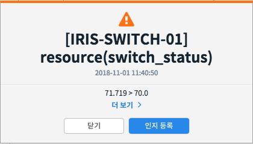
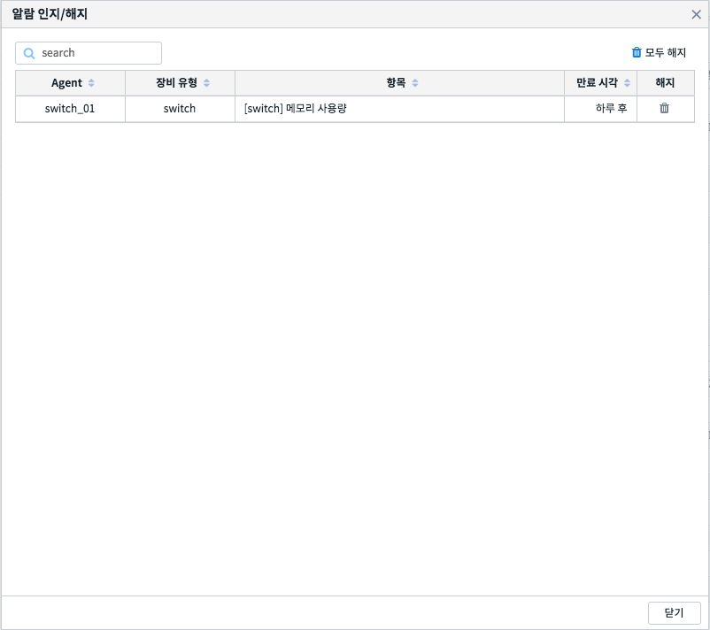

알람 인지/해지¶
알람 항목 설정에서 설정한 조건에 따라 알람이 발생하게 되는데, 반복적으로 발생하는 알람을 일정시간 중지하고 싶을 경우가 있습니다. 이를 위한 기능이 바로 인지/해지 기능입니다. 장애를 처리할 때 주로 사용됩니다.
알람 인지 등록¶
발생한 알람 항목에 대하여 알람 발생을 일정 시간 중지합니다. 알람 발생시 경고창에서 〈인지 등록〉 버튼을 클릭하면 인지 등록을 할 수 있습니다. 인지 등록된 알람은 향후 24시간 동안 발생하지 않습니다.
알람 인지 항목 해지하기¶
인지 등록한 알람 항목을 조회하고 이를 해지할 수 있습니다. 해지하면 알람 발생이 재개됩니다. 인지 등록된 알람 항목은 《알람 이력 조회》 화면에서 《알람 인지/해지》 버튼을 클릭하면 확인할 수 있습니다.
